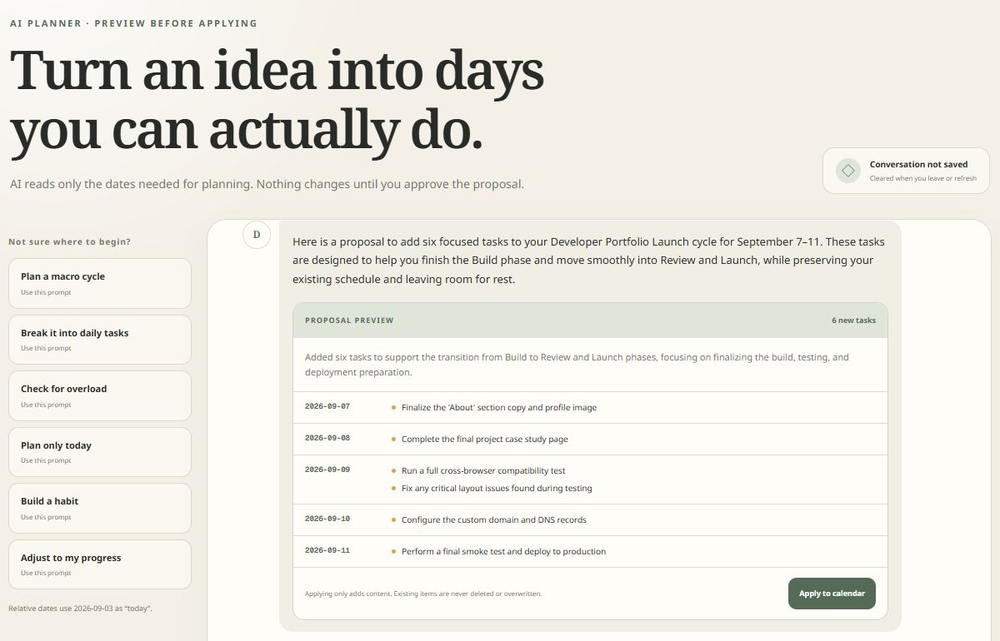
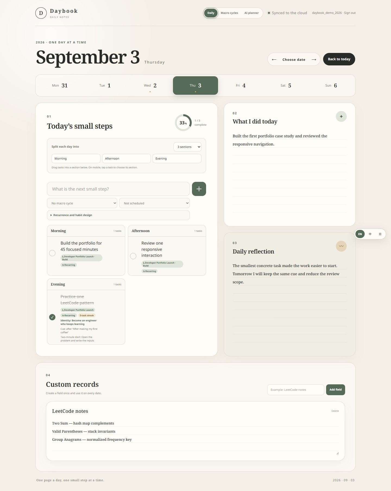

Learn a skill
Give practice a deadline and record what needs another try.
AI-assisted learning & goal planning
Learning a skill, shipping a project, or building a daily habit takes more than a deadline. Daybook connects your goals, daily tasks, and progress. Describe what you want to finish and the time you have; review an AI-proposed plan before adding it to your calendar.
Web app · English, 繁體中文 & 日本語 · Independently built in Taiwan

For independent learners and people building their own projects
Set a goal and a time budget, divide the work into phases, and keep small actions on your calendar. Track completed tasks, habits, and reflections. When you need another plan, ask the AI planner to work with the relevant dates and existing commitments.
Give practice a deadline and record what needs another try.
Break a portfolio or side project into phases and daily tasks.
Choose a cue, a two-minute start, and a recurring schedule.
One working example · coding practice
Two Sum: the hash map idea made sense, but when to insert the current number was still unclear.
Record the outcome and one useful note.Instead of rushing to a harder problem, ask for a short review of the invariant and a trace with duplicate values.
Read the explanation. Check the time estimate.Approve a linked practice session. Record the next result, then ask for another plan when your week changes.
Existing work stays in your calendar.From intention to daily action
These features are available in the live web app. Open the screenshots to inspect the interface, or follow the source links to see how planning works.
Describe an outcome, deadline, and available hours. Organize the goal into phases and link daily tasks to them. Ask the AI planner for a proposal that preserves existing commitments; check the scope before applying.

Keep the day’s tasks together with activity notes and a reflection. Create recurring habits with an identity, a cue, and a two-minute start. These records help you see what happened, alongside the progress of the larger goal.

The coding-practice workflow keeps LeetCode problems, dated attempts, outcomes, and notes together. Complete a linked practice task to record a new attempt. Coding interviews are one use case; the calendar also supports other learning goals and projects.

For general planning, describe a goal, deadline, and available time. The planner reads relevant tasks, goal cycles, phases, and day sections. Coding practice can additionally use recent attempt history when you explicitly enable it.
Enable “Use my practice history” and ask “Adjust my next practice week.” The planner receives recent attempts and practice sessions alongside relevant calendar context. It is instructed to explain reviews using dated attempts, account for missed sessions, and leave room in your time budget. Review the suggestions and estimated durations before applying. Existing tasks are preserved; Daybook does not automatically move or delete them.

Behind Daybook
Daybook is an independent software project developed by Po-Yu Pan, a developer based in Taiwan. Development began in August 2026. The app is available online, and its source and development history are public.
Questions about planning, learning, or a feature? Reach the developer at hi@matthiola.dev.
Daily planning, account sign-in, cloud sync, and goal cycles.
Proposal previews, recurring tasks, habit details, and three interface languages.
Short cycles with deadlines and improvements to mobile scrolling.
Opt-in attempt history and validated links from AI review proposals to existing practice problems.
A few useful details
Yes, to use the app. Sign in with Google or create a username and password. This product tour is public and requires no account.
Calendar data is scoped to your account and syncs across devices. Practice history is opt-in: up to 60 attempts with short notes and 100 practice sessions from the 30 days ending on the selected date are sent to Groq with your conversation and relevant calendar context. Read the app’s privacy policy for details before using it.
AI interprets your planning request and proposes goals, phases, and dated tasks. For coding practice, it can also interpret opt-in attempt notes and propose reviews. The app handles dates, progress, validation, and saving your approved plan. Suggestions may be wrong, so you review them before applying. The current AI provider is Groq. Claude is a planned evaluation, not an available integration.
Email hi@matthiola.dev or open an issue in the public repository. Please do not include private calendar content in public issues.
One page a day
把學習、專案與習慣，安排成下一週做得到的小步驟。